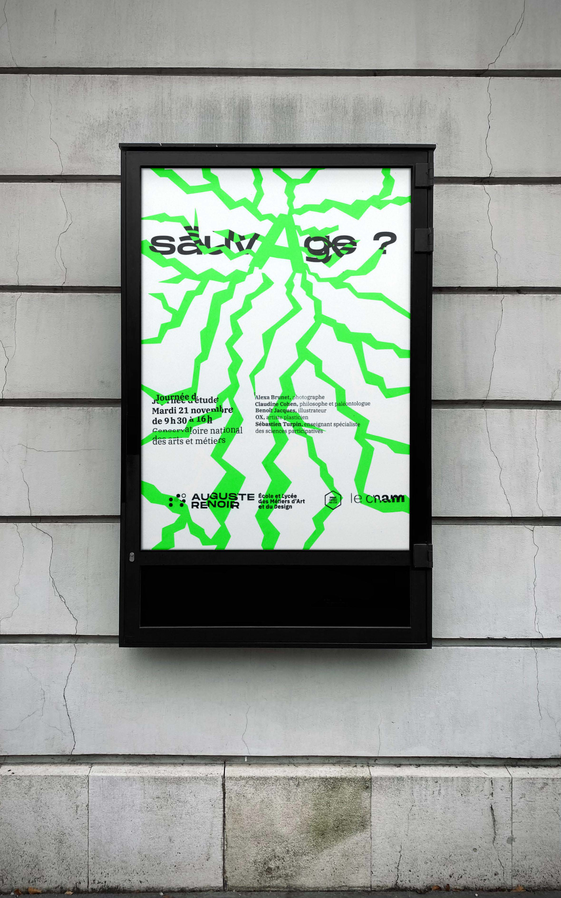
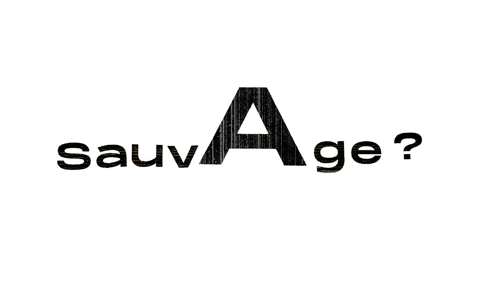

Sauvage ? - JDE
En 2023, lors d'une journée d’étude organisée par le Cnam et l’Elmad Auguste Renoir, le thème du sauvage a donné lieu à une campagne d'affichage. Le but : Concevoir une affiche qui ne se contente pas d’informer, mais qui incarne pleinement l’énergie brute du sujet à travers une exploration minutieuse de la micro et macro typographie.
 